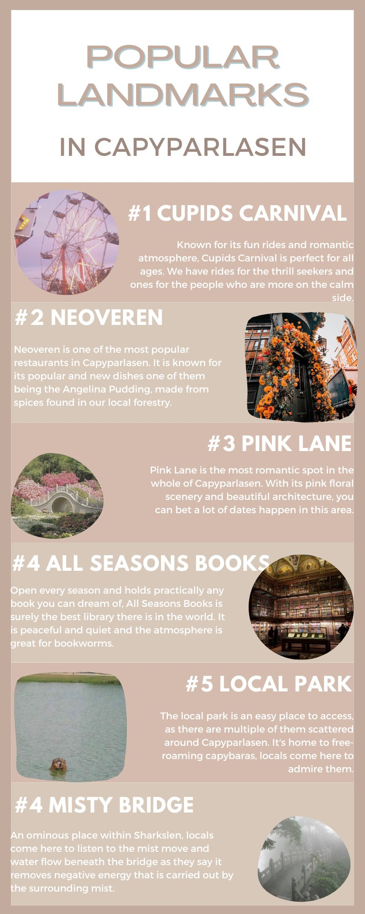

Overview
Welcome to the overview page. Here you will find a brief overview of some places you should go to when visiting Capyparlasen.
These could include famous landmarks or even just a simple cafe!

You may say “I don't know where I should start though!”. Well, we have the perfect solution to your problem.
Based on a series of surveys we have done on tourists, such as yourself, we have come up with a chart based on the most popular places people visit.
This is in the order from most to least people. We would recommend you follow this chart or you freestyle your adventure,
we are in no place to judge your decision as long as you enjoy yourself!
